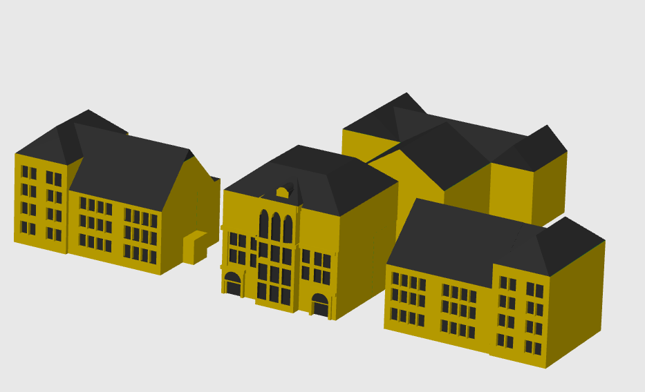
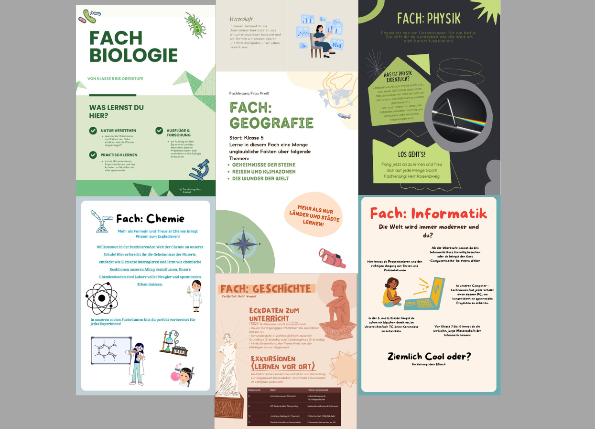
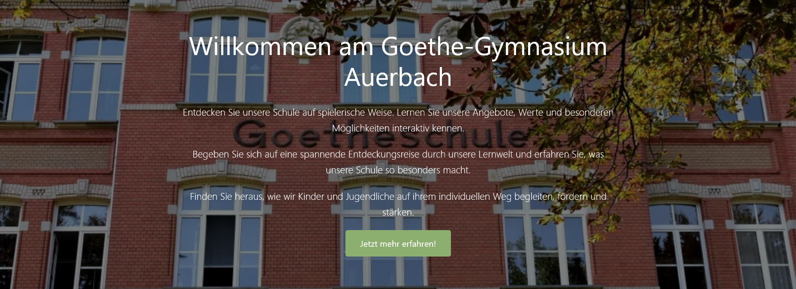

Erlebe unsere Schule jederzeit und überall
Projekt entdeckenUnsere Vision ist es, Schule neu zu denken: moderner, nachhaltiger und für alle zugänglich.
Mit unserer digitalen Website ermöglichen wir es, unsere Schule unabhängig von Zeit und Ort zu entdecken – ganz ohne Anfahrtswege oder Papierverbrauch.
Im Mittelpunkt steht dabei die Verbindung von Digitalisierung und Nachhaltigkeit. Durch innovative Technologien schaffen wir eine umweltfreundliche Alternative zum klassischen Tag der offenen Tür und leisten gleichzeitig einen Beitrag zu einem zukunftsorientierten Schulkonzept.
Mit dem gezielten EInsatz von Künstlicher Intelligenz schaffen wir eine innovative Lösung, die Bildung und Nachhaltigkeit miteinander verbindet.
Der klassische Tag der offenen Tür bringt einige Herausforderungen mit sich:
Unsere Lösung ist eine digitale Plattform, die alle wichtigen Inhalte rund um unsere Schule an einem Ort vereint.
Mit einem interaktiven 3D-Rundgang können Besucherinnen und Besucher die Schule virtuell erkunden und einen realistischen Eindruck gewinnen.
Zusätzlich stellen wir alle Informationen zu Fächern, Angeboten und Projekten digital zur Verfügung und ergänzen diese durch interaktive Elemente, die das Entdecken spannender und abwechslungsreicher machen.
Unsere Website bietet verschiedene Möglichkeiten, die Schule aktiv zu erkunden:
Die Umsetzung unseres Projekts begann mit einer intensiven Ideenfindung. Zunächst haben wir verschiedene Ansätze gesammelt, wie Schule moderner und nachhaltiger gestaltet werden kann.
Anschließend haben wie diese Ideen mit aktuellen Problemen im Schulalltag verknüpft, wie dem hohen Papierverbrauch und den vielen Anfahrtswegen zum Tag der offenen Tür. Daraus entstand unser Ziel, eine Lösung zu entwickeln, die genau diese Herausforderungen verbessert.
Unser Ansatz war es, möglichst viele digitale Inhalte an einem zentralen Ort zusammenzubringen - von Informationen über Fächer bis hin zu interaktiven Elementen und dem virtuellen Rundgang.
Auf dieser Grundlage haben wir schließlich unsere Website entwickelt, die all diese Inhalte vereint und eine moderne, nachhaltige Alternative zur klassischen Schülervorstellung bietet.

Erstellen eines 3D-Rundgangs und Quizfragen

Interaktive Spiele zu Fächern.
(Quizze und Übungen)
Werbeprodukte wie Schlüsselanhänger und Schule mit QR-Code

Erstellung von einem Plakat unserer Schule, interaktiver Präsentation und Infoflyern über die Fächer

Austausch und Zusammenfügen aller Ergebnisse mittels einer Website und einer Präsentation


Starte den 3D-Rundgang | Informiere dich über unsere Fächer | Probiere unsere interaktiven Inhalte aus
Jetzt entdecken!